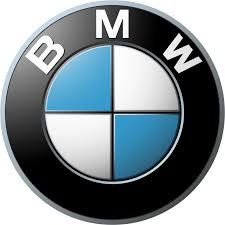
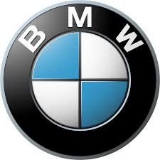

Audi DKW, Horch, Audi və Wanderer markaları altında avtomobil və motosiklet istehsal edən dörd şirkətin birləşməsi nəticəsində meydana gələn Auto Union birliyininin davamçısıdır.[7][8] Dəyişikliklər nəticəsində yalnız Audi markası qalmışdır.[9] İlk Wanderer avtomobili 1913-cü ildə çıxdı, ilk öz müəssisəsi isə (Horch & Co.) 1899-da təşkil edilən və kreditorlar işdən çıxdıqdan sonra 1909-cu ildə isə Audi ortaya çıxdı.[10] 1910-cu ildə ilk avtomobil istehsal olundu.[11] Almancadan tərcümədə Horx (Horch) "qulaq asmaq" deməkdir.[12] Yeni marka adını seçdikləri zaman, Avqustun iş ortaqlarından birinin oğlu eyni sözü, yəni Audini təklif etdi. 1921-ci ildə şirkət bir növ atılım etdi. Bu il, soltərəfli ilk Alman avtomobili istehsal edildi. Bundan əvvəl şirkət yalnız mühərriklərdə və dayandırma sistemlərində işləmiş, lakin daha sonra idarəetmənin rahatlığına diqqət yetirmişdir.[13] 1928-ci ildə bu marka motor istehsalçısı DKW tərəfindən satın alındı və 1931-ci ildə ön təkərli bir avtomobilin debütü olan DKW F1 yarandı.[14] 1929-cu ildə başlayan böyük böhran Audiyə təsir etdi.[15] Əslində, böyük bir mühərrik həcmi olan avtomobillər pulun ümumi çatışmazlığı səbəbindən artıq tələbatın olmadığını göstərir. Daha sonra Audi başı ön təkərli kompakt avtomobil hazırlamağı tapşırdı.[16] Dörd avtomobilləri birləşdirmək üçün təkan Sakson Bələdiyyə Bankı - bütün bu şirkətlərin borcunu verən tərəfindən verilmişdir. O, avtomobil sənayesindəki investisiyalarından qorxdu. 29 iyun 1932-ci ildə 4 zavod - Audi, Horch, Wanderer və DKW Auto Union AG-da birləşdi. Onun simvolu dörd üzük oldu. Belə birləşmədən sonra şirkət Almaniyada ikinci avtomobil istehsalçısı oldu. Audi, DKW, Horch və Wanderer markaları bir-biri ilə rəqabət aparmadılar. Əslində, hər bir brendə ayrı bir bazar seqmenti verilmişdi: Audi - idman maşını, DKW - motosiklet, Horch - böyük və zəngin bəzəkli avtomobillər və Wanderer - lüksün orta hissəsi ilə məşğul olurdu. Həm də şirkət avtomobil yarışlarında iştirak edirdi. Auto Union modeli olan "Silver Arrow" dünyanın müxtəlif yarışlarında və çempionatlarında qalib gəldi. Eyni zamanda çox sayda dünya rekordları təyin edildi. 1940-cı ildə bütün vətəndaş mühərriklərinin sərbəst buraxılması məhdudlaşdırıldı, zavodlar Horch 901 personal avtomobilinin istehsalına keçdi.

 
